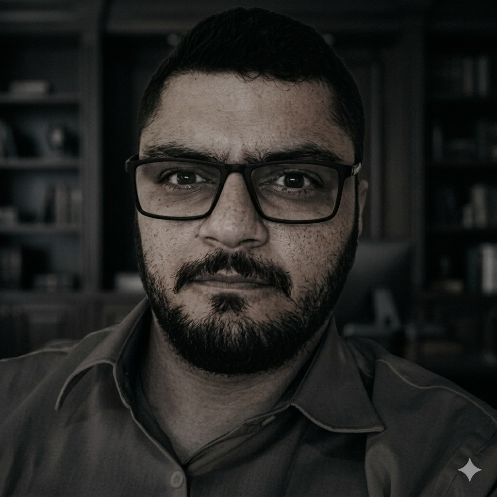

Soluções Inteligentes e Blindagem Documental Corporativa
Registro MTE: 47598-SP
Atendimento especializado In Company para empresas de pequeno, médio e grande porte.
MODELOS DE CONTRATAÇÃO & ATUAÇÃO
E-mails: marcell.freitas88@gmail.com | marcell_freitas@hotmail.com
Atuação: Santos - SP (Atende todo o Brasil)
Profissional com mais de 15 anos de sólida atuação em Saúde e Segurança do Trabalho, combinando vivência prática de campo à gestão estratégica de SST em multinacionais. Com experiência como ponto focal do Brasil para grandes corporações, conduzindo processos, auditorias e treinamentos em português e inglês, atuo de forma robusta em consultoria técnica (PJ), gestão documental complexa, resposta a emergências e perícia técnica. Meu foco é transformar o rigor normativo em conformidade legal, eficiência de processos e segurança real para as pessoas, oferecendo um suporte técnico de alto nível à tomada de decisão de parceiros e clientes.
Modelos de treinamentos autorizados para instrução e capacitação:
Atuação técnica especializada em serviços de auditorias, perícia técnicas e segurança empresarial, com foco na mitigação de riscos ocupacionais e conformidade normativa. Responsável pela execução de avaliações ambientais quantitativas e qualitativas, utilizando instrumentação técnica para medição de agentes ambientais de risco como ruído, vibração, e temperatura. O trabalho abrange a elaboração rigorosa de documentos de saúde e segurança ocupacional, garantindo o suporte técnico necessário para laudos periciais e auditorias internas.
Specialized technical expertise in auditing services, technical expertise, and corporate occupational security, focusing on mitigating occupational risks and ensuring regulatory compliance. Responsible for conducting quantitative and qualitative environmental assessments, using technical instrumentation to measure environmental risk agents.
Atuação como ponto focal em Saúde e Segurança do Trabalho, garantindo conformidade com normas legais e requisitos internos de SST em ambiente corporativo e operacional. Gestão de riscos, análise de PGR, PCMSO, Mapas de Risco, AET, Planos de Emergência e suporte técnico à CIPA.
Acting as the focal point for Occupational Health and Safety, ensuring compliance with legal requirements and internal HSE standards. Development, review and monitoring of Risk Management Programs, Emergency Plans and occupational health records.
Responsável pela gestão de SST de todos os escritórios brasileiros (180–213 colaboradores). Reuniões de indicadores em inglês com equipes da Colômbia, Chile, EUA, Irlanda e Inglaterra. Supervisão de obras, implantação da CIPA, riscos psicossociais e adequação documental completa.
Provision of technical consulting services in Occupational Health and Safety, supporting companies in meeting regulatory and corporate HSE requirements. Experience in legal compliance assessments, risk analysis, document review and organization.
Supervisionei e coordenei equipes de saúde e segurança em diversas frentes de trabalho e locais. Gerenciei contratos com clientes/parceiros permanentes e ocasionais. Supervisionei a emissão, revisão e gestão de documentação de SSMA incluindo PGR, PCMSO, PCMAT, CIPA, PPP, PCA, PPR, CAT e APR.
I supervised and coordinated health and safety teams across various work fronts and locations, ensuring operational efficiency and compliance with legal requirements. I managed contracts with permanent and occasional clients.
Ministrei treinamentos técnicos e cursos de certificação em saúde e segurança ocupacional (NR 33, 35, 20, 18, 23, Brigada, Bombeiro Civil, Primeiros Socorros). Conduzi com sucesso sessões de treinamento em inglês para profissionais e tripulantes estrangeiros de navios e plataformas.
I delivered technical training and certification courses in occupational health and safety. I successfully conducted several training sessions in English for foreign professionals, improving communication and intercultural learning.
Prestação de consultoria técnica em SST, apoiando micro e pequenos empresários com treinamentos, assessoria em gestão, análise e emissão de documentos e vistorias em campo em indústrias, portos, navios e frentes de serviço.